Avord 2004


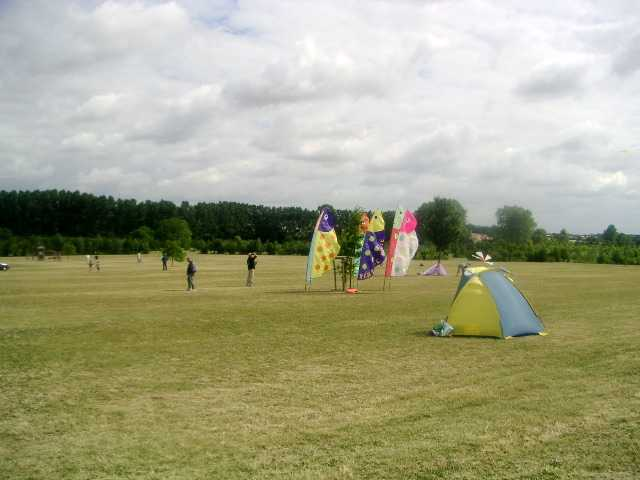
Cette année, deuxième édition du festival d'Avord. Cadre splendide dans un immense "parc arboré" (pas encore très grands, les arbres, mais 10 000 !) avec de vastes plaines herbeuses très accueillantes, sauf pour enfoncer des piquets (c'est exprès ?).

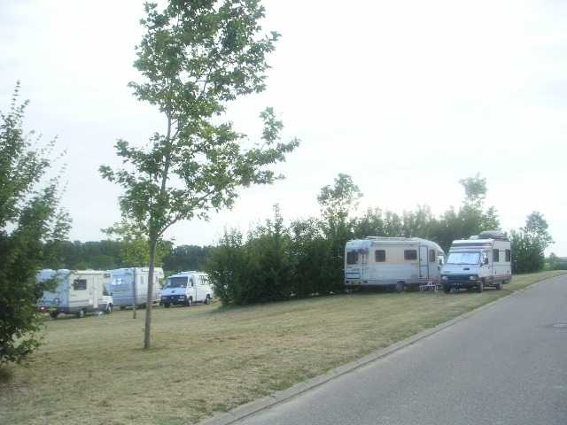
Les camping-cars, d'abord relégués dans une contre-allée ont pu trouver une place plus rapprochée, en rapport avec les besoins de la pratique du cerf-volant et la position de la buvette. En effet, se sont manifestés des cervolistes du coin, mais aussi venus de loin, par exemple de Toulouse, de Courdimanche et autres.

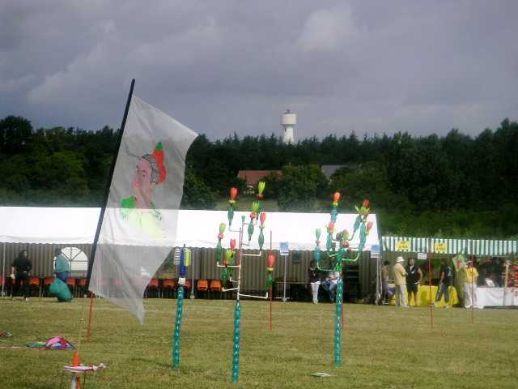
Fernando était là depuis la veille, bien sûr, avec ses cactus évolutifs et sa nouvelle bannière vaporeuse, mais aussi Gaby et son papillon hyper-statique, Marc, avec son Fugu, sa pieuvre et ses oiseaux balinais.

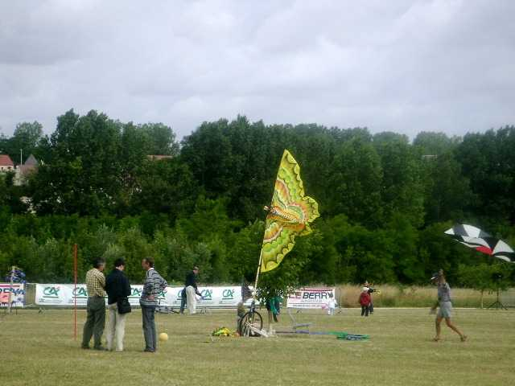

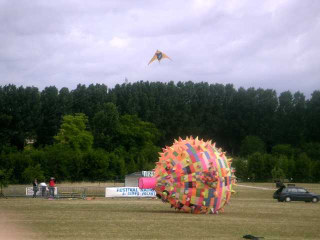

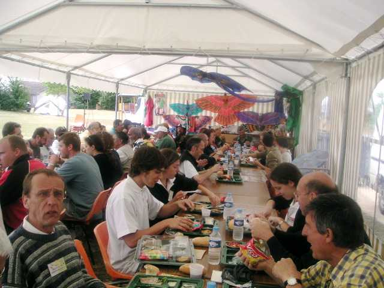
A 12 h 15 pétantes, déjeuner sous la tente, plateaux-repas honnêtes, bonne ambiance.

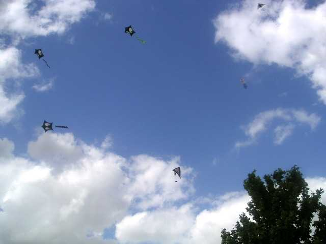
Après-midi, navette avec lâcher de bonbons (pas de blessés à signaler chez les enfants, et pourtant !), sous les yeux envieux des pentagones.

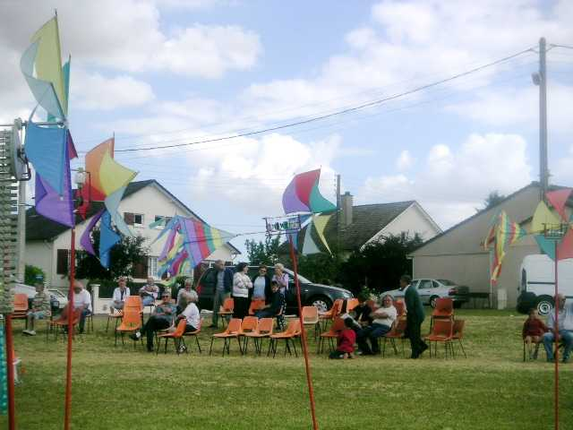
Des sièges sont prévus pour les spectateurs, derrière les moulinets de Joël, maintenant ils connaissent "Vive le vent..." par coeur !

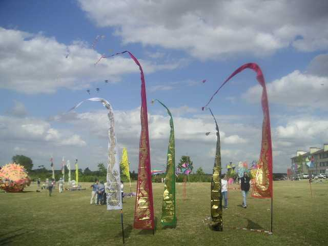
Marc a sorti ses belles bannières brodées au fil d'or (euh, je suis pas sûr, c'est peut-être seulement du papier doré )!

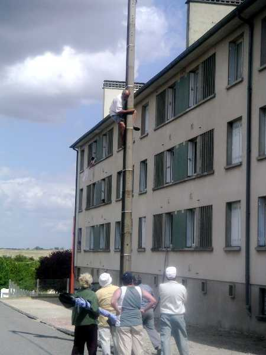
Intermède classique, Sylvien s'est pris (enfin, on l'a poussé, car jamais il n'irait tout seul) dans une cheminée, et on a dû appeler un gamin pour monter au poteau.

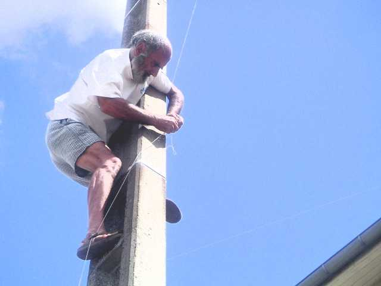
Mais il a encore fallu se dégager de la cheminée suivante, puis de l'antenne de télé collective et musclée, grâce à des manoeuvres de cerfs-volants adroites et obstinées : j'accroche le fil à un autre cerf-volant, je soulève, je vais à droite en lançant le dévidoir par dessus les fils du téléphone, je décroche un peu, je reviens à gauche par la manoeuvre inverse, je redécroche, et miracle, c'est libre et, encore plus fort, on n'a pas accroché le deuxième cerf-volant ! Et pourtant ça ne manquait pas de conseilleurs...

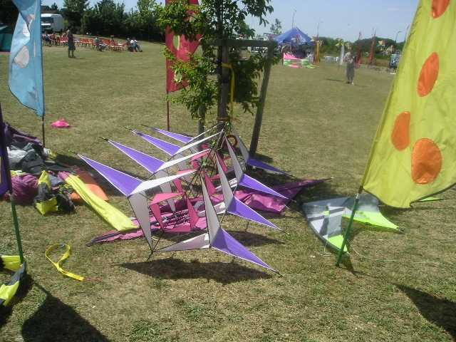
On a encore vu quelques cerfs-volants intéressants :

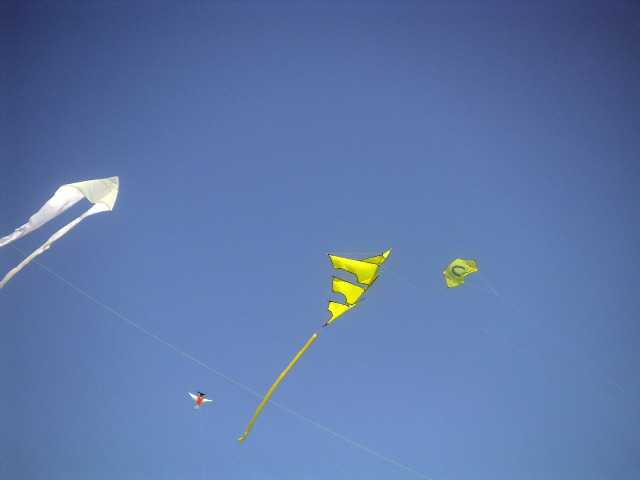

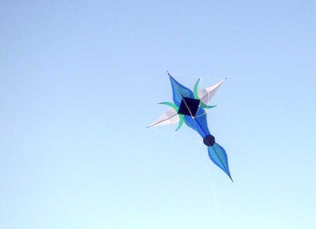

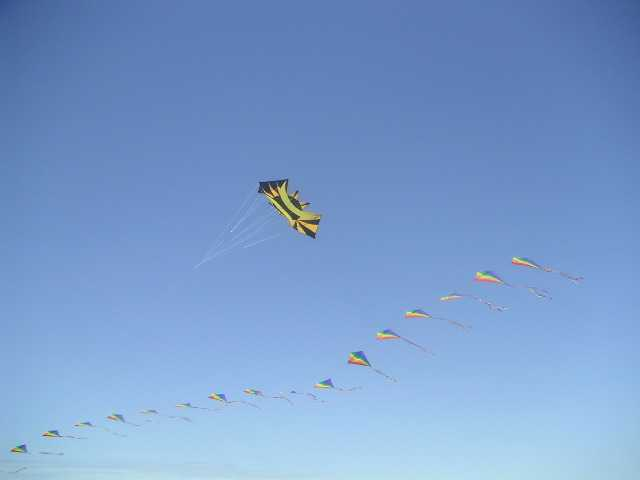
Et je passe les combattants ou créations très esthétiques de Guy Gosselin.

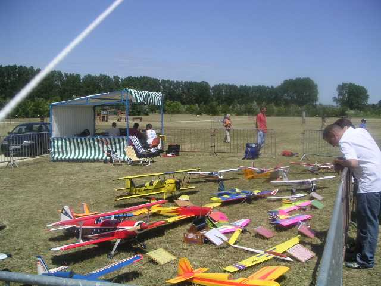
Dimanche matin, les aéromodélistes arrivent en force, mais on ne les a pas beaucoup vu voler : "sécurité du public pas bien assurée, et puis les cerfs-volants volent dans notre zone"... D'accord, mais tant qu'ils ne volent pas, nous on occupe le terrain ! De très belles maquettes quand même.

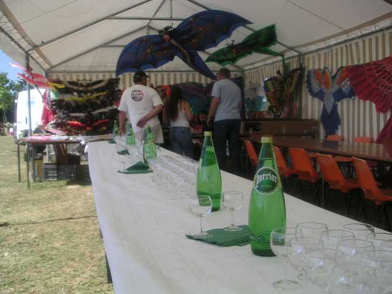
Dimanche, pot offert par la ville. Cela a l'air très sobre au départ, mais ça va venir, on a attendu assez longtemps le discours du maire pour mériter mieux...

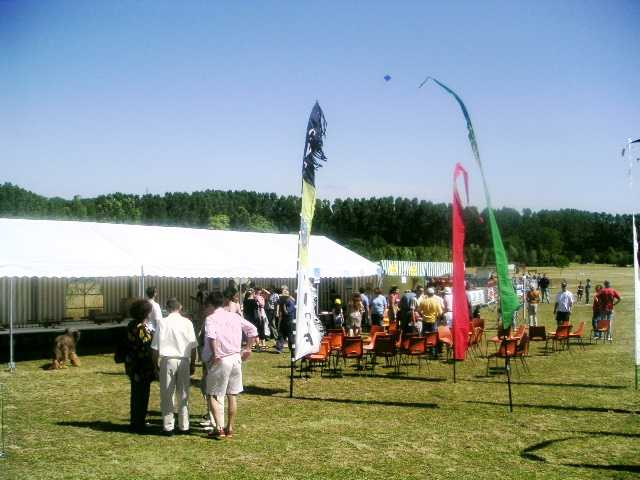

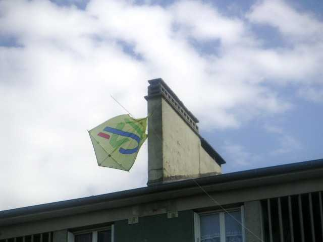
Enfin, il fait beau toute la journée, avec du vent (paraît que l'année dernière c'était Force 0 ?), un peu turbulent. Conséquence : un nouveau cerf-volant dans la même cheminée, et celui-là y restera, mais c'est un CV publicitaire de forme banale, ça ne nous manquera pas... Faudra quand même me faire raser cette cheminée pour l'an prochain !

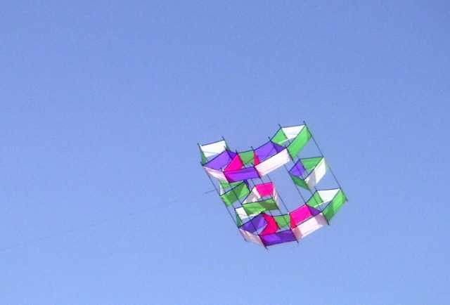
Encore quelques beaux cerfs-volants, avec ce beau temps ! La demi-lune (?) de Jean-Claude,

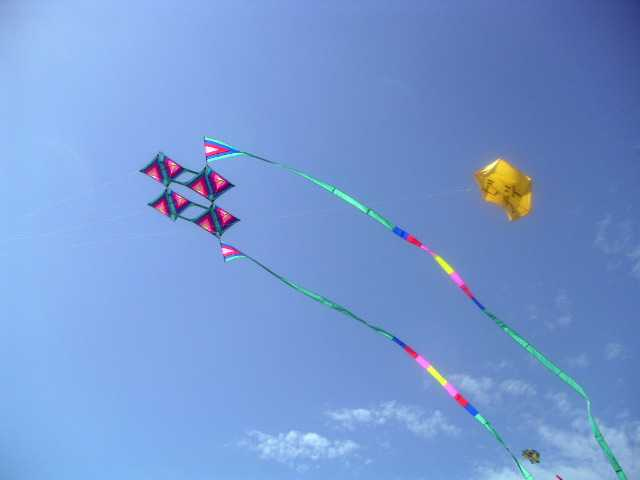
la belle et grande structure de Joel,

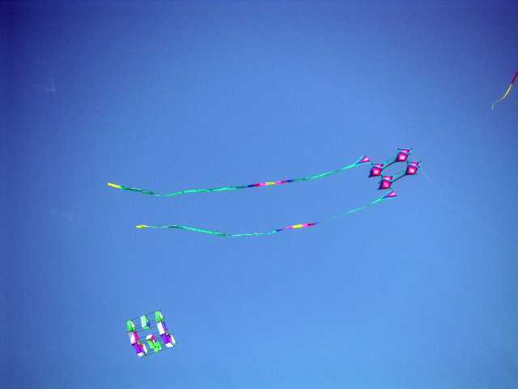

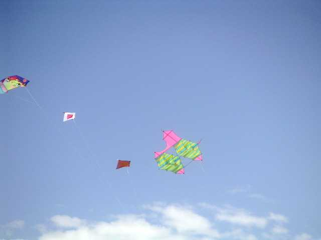
un Cody très pastellisé (non, je ne crois pas que ce soit à Gaby, pourquoi ?).

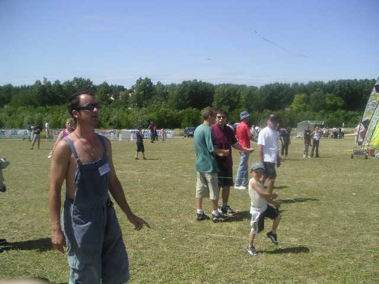
Sur les deux jours, un grand challenge, les combats de rokkakus qui réunissaient une pléiade de participants, dont certains très jeunes comme ce garçon (un fils de David ?) ou Séverine qui a animé la fête au micro (par courts instants).

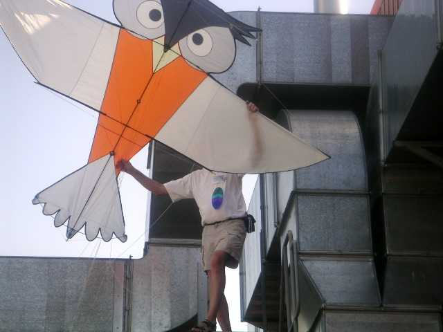
Pour finir, un petit tour de la chouette pendant que son propriétaire s'occupait du sauvetage en cours, et hop, dans l'usine à clim du gymnase. Récupération plus facile, par escalade, une fois localisée la bête.
Un grand merci aux organisateurs, en particulier pour la sono : bien que super puissante lors des tests, elle a été seulement mise en fond sonore présent mais discret. Une leçon pour les autres organisateurs : faut gérer les décibels. Mais il faut bien reprendre la route (I am a poor lonesome cerf-voliste...), et le théâtre antique tout neuf pourra continuer à se patiner sous ce si joli ciel. Alors, à l'année prochaine !